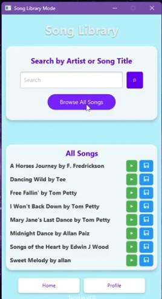
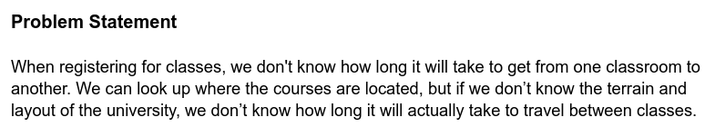
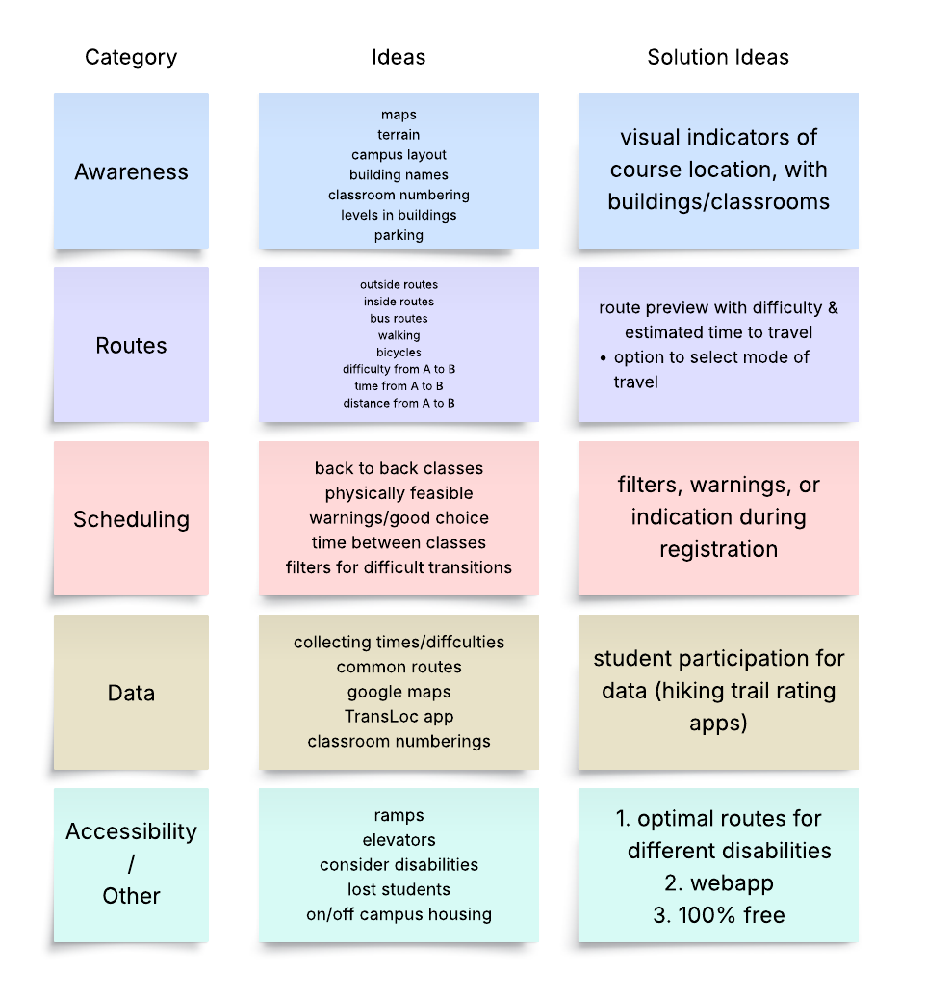
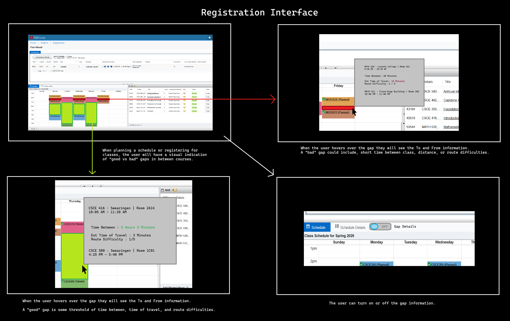

About Me
I thrive when solving hard problems, learning, creating, and exploring what is unknown to me. I strive to leave a legacy through contributions in many fields from artistic creations to algorithmic solutions and everything in between. My many passions pull me from specializing in single areas, and up until recently, I conformed to the restraints set by others, but now my field of view is open to infinite possibilities. My work, interactions, and liberty will infect and inspire in ways that have already begun to flourish, but I have yet to understand.
Skills
Highlighted Projects
JETA - Software Engineering Course Team Project

Worked as a team to develop a music application written in Java. I worked in an agile, iterative development process implementing design patterns, object oriented programming, and unit testing. I created documentation, system design diagrams, and used GitHub for version control.
Problem Statement

When registering for classes, we don't know how long it will take to get from one classroom to another. We can look up where the courses are located, but if we don’t know the terrain and layout of the university, we don’t know how long it will actually take to travel between classes.
Affinity Diagram

My affinity diagram covers ideas I've had for integrating a solution when registering for classes or potentially building a standalone webapp that anyone could access.
Sketches

These sketches are the three implemtation options I thought of (click link to see all 3), from registering classes, a mobile app, and a simple webapp.